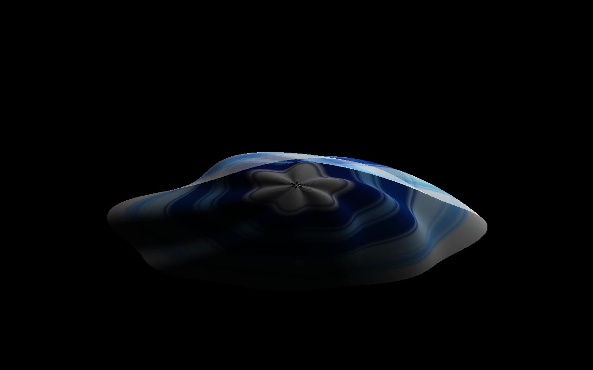
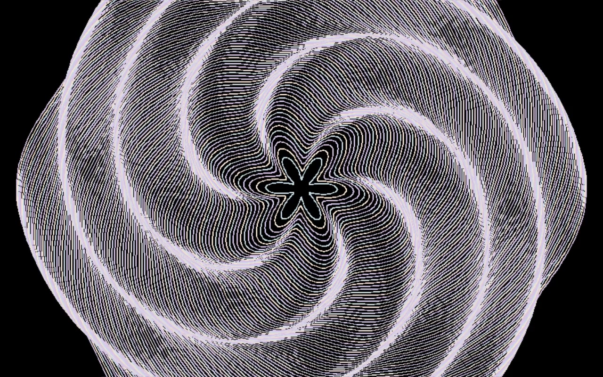
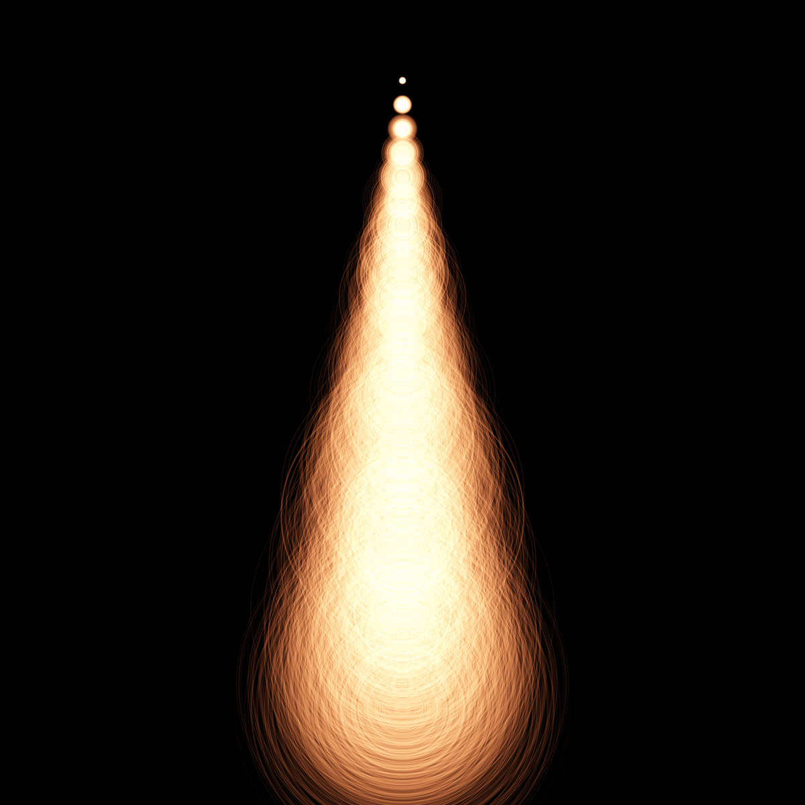
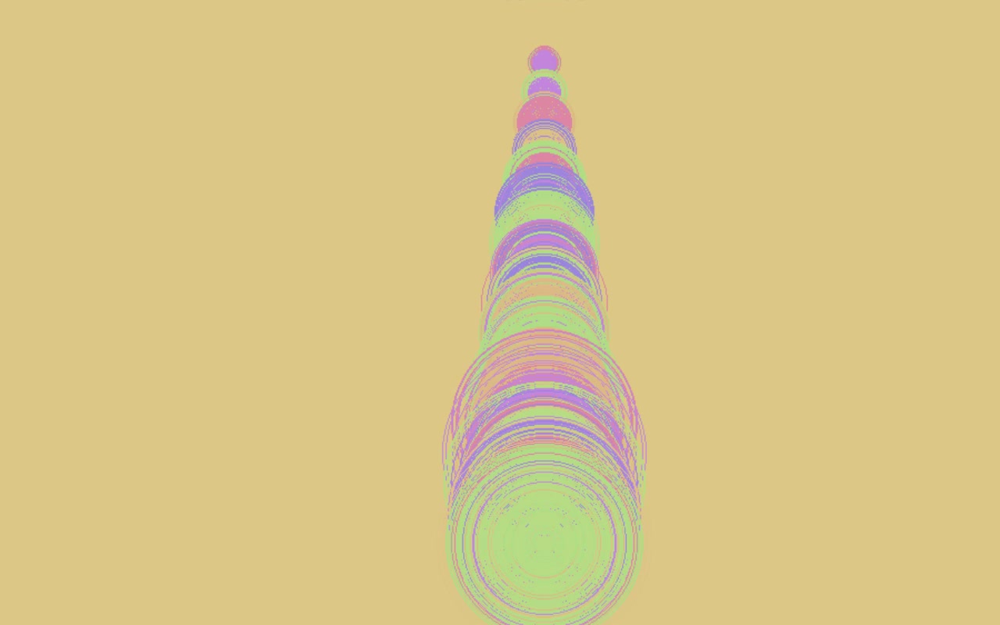
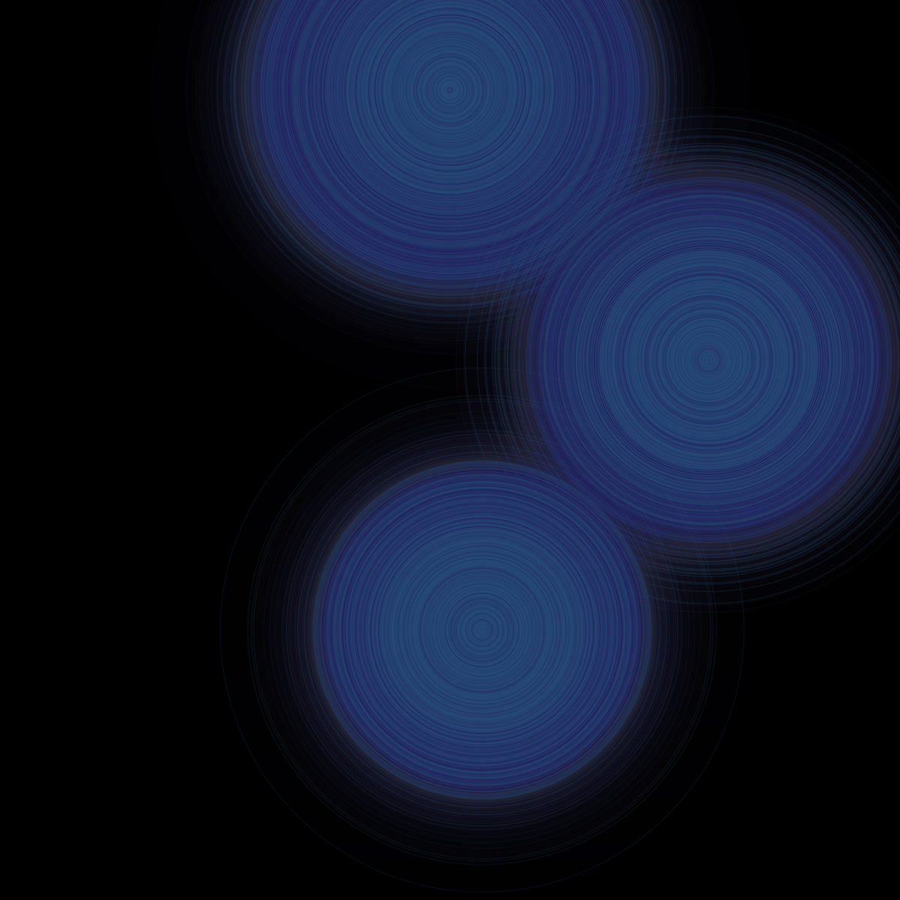

Visual API
My archive holds 250 small generative pieces written in Processing: orbits, waves, ripples, ridgelines, rings, shells and layered textures. Visual API brings them back as real-time pieces running on the graphics card, so they can be played again, full screen, one after another with crossfades, like a visual set.
Most of them are not fixed images but small systems: a few rules, a little randomness or noise, and time. What you see is what those rules produce, frame after frame, so a piece never plays exactly the same way twice. Alongside the archive, a few new pieces explore emergence: patterns that nobody draws, which grow out of simple rules.
Every video and image below was recorded straight from Visual API, except the layered circles, which are saved outputs of the original sketches.
Trails and orbits
Lines circle a dark centre, like matter around a black hole. Instead of clearing the screen, each frame lays a very faint black veil over the last one, so every movement leaves a fading trail. The image becomes the memory of the motion.
Wave surfaces
Hundreds of cubes form a surface that sine and cosine waves lift and fold. The camera does the rest: it turns around the surface, flies through it or rushes forward. Some variants move to a beat.
Water ripples
A simulated water surface: each point remembers its last two heights and passes the wave on to its neighbours, with a little damping so ripples die out. The water bends an image lying underneath, like looking through a pond. Drops fall as rain, on a grid, or along moving stripes.
Noise landscapes
Mountain ridges drawn from layered noise: smooth randomness added at several scales, which is how real relief looks. The ridges are stacked in layers that keep shifting, wrapped around a circle, broken into waves that jump and fold, or trailed by fading shadows of their past positions.
Rings and echoes
Circles grow out of single points and pile up into rings, like grooves on a vinyl record or ripples on a lake. Older rings fade slowly, so the picture is always a mix of now and a moment ago.
Shells and nacre
Shells built as 3D surfaces and lit softly, and rings of colour that follow the bands of mother-of-pearl.


Layered circles
Each of these is a single still image, saved from the original Processing sketches. Circles are stamped again and again on a black ground, each time slightly shifted and almost transparent, colour after colour. They pile up into glowing cones and soft discs whose edges turn into grainy rings, somewhere between nacre, tree rings and light.



Emergence
Here nothing is drawn directly. Each cell follows simple rules about its neighbours, and shapes appear on their own: Conway's Game of Life flickers and swarms, Lenia grows like a soft organism. AImmune simulates a tiny immune system (cells hunting antigens, cloning, dying), and its activity feeds a reaction-diffusion pattern, the kind of chemistry behind animal spots and stripes. It can listen to a microphone and react to music.